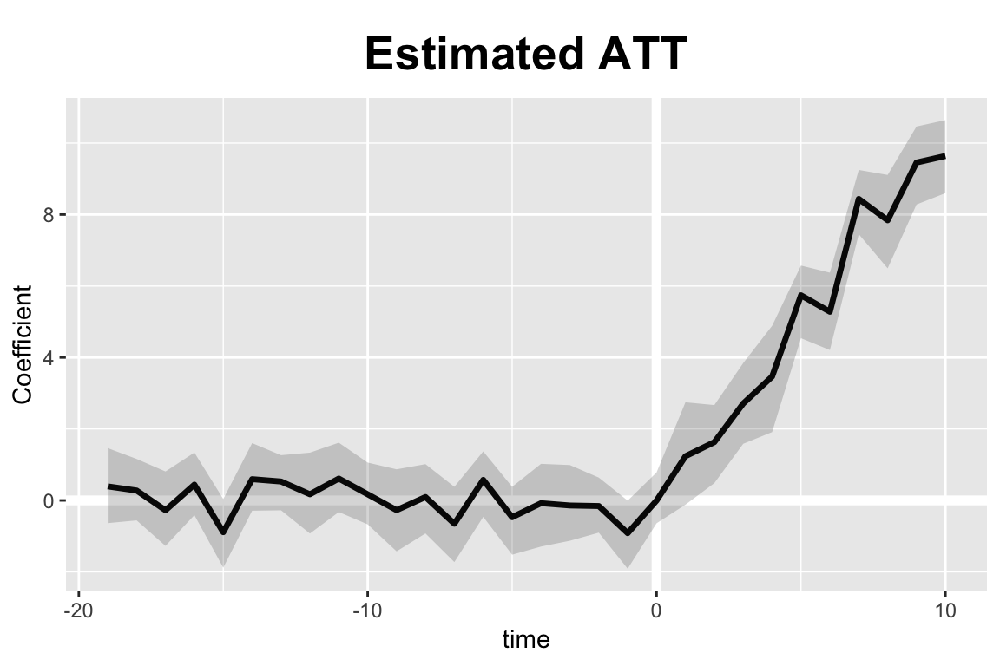
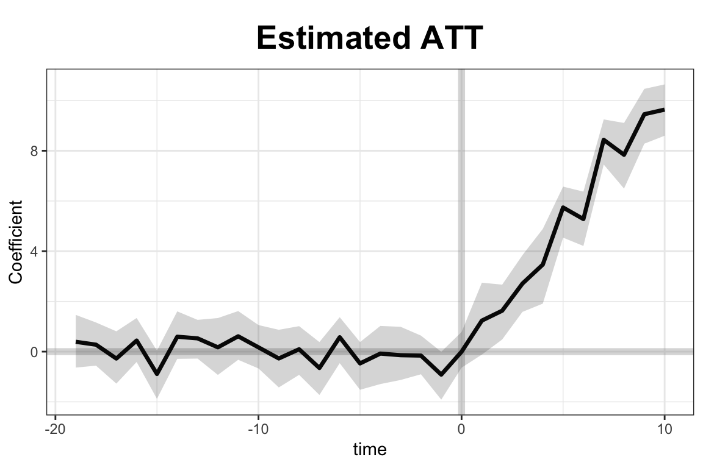

Introduction
Synthethic methods are a method of causal inference that seeks to combine traditional difference-in-difference types studies with time series cross sectional differences with factor analysis for uncontrolled/ unobserved measures. This method has been growing our of work initially from Abadie (Abadie, Diamond, and Hainmueller 2011a) and growing in importance/ research for state level policy analysis. It is interesting from the fact that it combines some elements of factor analysis to develop predictors and regression analysis to try to capture explained and unexplained variance.
Package
library(tidyverse)
library(gsynth)
library(panelView)Method Assumptions
This methodology makes several critical assumptions.
- The model takes the functional form of \[Y_{i,t}=\delta_{i,t}D_{i,t}+x_{i,t}^\prime\beta+\lambda_i^{\prime}f_i+\epsilon_{i,t}\]
- Strict exogeneity (e.g. the error terms are indepdent to D, X, \(\lambda\) and f)
- Weak serial dependence of the error terms
- Regularity of conditions
The method then uses bootstrapping for confidence intervals.
There is some basic data available in the package
data(gsynth)The data that will be initially used will be the simdata dataset
| id | time | Y | D | X1 | X2 | eff | error | mu | alpha | xi | F1 | L1 | F2 | L2 | |
|---|---|---|---|---|---|---|---|---|---|---|---|---|---|---|---|
| 1379 | 146 | 29 | 16.97 | 0 | 1.67 | 1.74 | 9.38 | 1.39 | 5 | 0.27 | 3.24 | 0.18 | -1.25 | -0.38 | -1.08 |
| 1048 | 135 | 28 | 17.22 | 0 | 0.89 | 2.64 | 8.60 | 0.27 | 5 | 0.11 | -1.26 | -1.22 | -1.65 | -1.67 | -1.38 |
| 183 | 107 | 3 | 8.20 | 0 | -0.14 | 0.93 | 0.00 | -0.57 | 5 | -0.08 | 0.74 | -0.04 | 0.10 | -0.37 | -1.29 |
| 703 | 124 | 13 | 6.68 | 0 | 0.05 | 0.11 | 0.00 | 1.13 | 5 | 0.46 | 0.69 | -0.33 | 1.71 | 0.24 | -1.73 |
| 1336 | 145 | 16 | 9.28 | 0 | 0.32 | 1.31 | 0.00 | -0.82 | 5 | 0.06 | 0.79 | 0.30 | -1.20 | -0.60 | -0.62 |
| 699 | 124 | 9 | 2.83 | 0 | 0.82 | -0.62 | 0.00 | -0.87 | 5 | 0.46 | -1.51 | 0.12 | 1.71 | -0.33 | -1.73 |
| 517 | 118 | 7 | 18.29 | 0 | 2.06 | 1.91 | 0.00 | 0.98 | 5 | 1.15 | -0.26 | -1.55 | -1.59 | 1.10 | 1.08 |
| 44 | 102 | 14 | 9.78 | 0 | 1.12 | -0.12 | 0.00 | 1.65 | 5 | 2.29 | 2.10 | -1.02 | 1.69 | -0.63 | 0.49 |
| 1 | 101 | 1 | 6.21 | 0 | 0.38 | -0.17 | 0.00 | 0.30 | 5 | -0.06 | 1.13 | 0.25 | -0.04 | 0.01 | -0.88 |
| 1031 | 135 | 11 | 6.11 | 0 | 0.30 | 1.02 | 0.00 | 0.17 | 5 | 0.11 | -0.53 | 0.38 | -1.65 | 0.99 | -1.38 |
| 242 | 109 | 2 | 9.66 | 0 | 2.25 | 1.00 | 0.00 | -0.35 | 5 | 0.69 | -1.46 | -0.03 | 0.18 | 0.39 | 1.37 |
| 726 | 125 | 6 | 15.78 | 0 | 2.20 | 2.91 | 0.00 | -0.99 | 5 | -0.65 | 0.70 | 1.52 | 0.54 | 0.33 | -0.09 |
| 293 | 110 | 23 | 15.14 | 0 | 1.40 | 2.74 | 3.65 | -0.48 | 5 | 1.44 | -0.37 | 1.01 | -0.15 | -0.25 | -0.43 |
| 827 | 128 | 17 | 18.64 | 0 | 2.45 | 2.96 | 0.00 | -1.07 | 5 | 1.63 | 0.77 | 0.45 | 0.33 | 2.19 | 0.39 |
| 325 | 111 | 25 | 6.23 | 0 | 1.86 | 0.45 | 6.55 | -0.38 | 5 | 0.41 | -0.37 | -0.69 | 1.58 | -0.95 | 0.57 |
| 1290 | 143 | 30 | 6.16 | 0 | 0.15 | 0.59 | 10.58 | -0.50 | 5 | 0.60 | -0.42 | -0.14 | -0.30 | 0.92 | -0.54 |
| 897 | 130 | 27 | 5.15 | 0 | 1.94 | -0.77 | 8.82 | -0.61 | 5 | 0.79 | -1.05 | -0.28 | -1.22 | -0.78 | -1.35 |
| 150 | 105 | 30 | 20.42 | 1 | 1.58 | 1.97 | 9.04 | -0.35 | 5 | -0.86 | -0.42 | -0.14 | 2.22 | 0.92 | 0.90 |
| 115 | 104 | 25 | 9.31 | 1 | 0.39 | -0.53 | 5.33 | 0.02 | 5 | 1.34 | -0.37 | -0.69 | 2.02 | -0.95 | -0.62 |
| 475 | 116 | 25 | 3.99 | 0 | -1.47 | 0.82 | 4.22 | -0.49 | 5 | -0.36 | -0.37 | -0.69 | 1.39 | -0.95 | -0.18 |
| 939 | 132 | 9 | 9.35 | 0 | 2.32 | 1.98 | 0.00 | -1.40 | 5 | -0.96 | -1.51 | 0.12 | 1.39 | -0.33 | 0.58 |
| 60 | 102 | 30 | 24.00 | 1 | 2.10 | 1.89 | 9.50 | -0.36 | 5 | 2.29 | -0.42 | -0.14 | 1.69 | 0.92 | 0.49 |
| 1489 | 150 | 19 | 15.38 | 0 | 1.71 | 2.63 | 0.00 | 0.64 | 5 | 0.01 | -1.01 | 0.92 | 1.24 | -0.24 | 0.04 |
| 684 | 123 | 24 | 15.18 | 0 | -0.35 | 3.22 | 3.33 | 1.62 | 5 | -1.14 | 0.98 | -0.71 | 0.49 | -0.35 | 0.73 |
| 3 | 101 | 3 | 8.88 | 0 | 1.86 | 0.50 | 0.00 | -0.48 | 5 | -0.06 | 0.74 | -0.04 | -0.04 | -0.37 | -0.88 |
It can be examined via the panelView package:
panelView(Y ~ D, data = simdata, index = c("id","time")) 
panelView(Y ~ D, data = simdata, index = c("id","time"), type = "raw") 
Modeling
out <- gsynth(Y ~ D + X1 + X2, data = simdata,
index = c("id","time"), force = "two-way",
CV = TRUE, r = c(0, 5), se = TRUE,
inference = "parametric", nboots = 1000,
parallel = FALSE)
Cross-validating ...
r = 0; sigma2 = 1.74717; IC = 0.56867; MSPE = 2.37280
r = 1; sigma2 = 1.42977; IC = 0.76329; MSPE = 1.71743
r = 2; sigma2 = 0.93928; IC = 0.72756; MSPE = 1.14540*
r = 3; sigma2 = 0.88977; IC = 1.04715; MSPE = 1.15032
r = 4; sigma2 = 0.83864; IC = 1.35103; MSPE = 1.21397
r = 5; sigma2 = 0.79605; IC = 1.65130; MSPE = 1.23876
r* = 2
Simulating errors .............
Bootstrapping ...
..........
print(out)
Call:
gsynth.formula(formula = Y ~ D + X1 + X2, data = simdata, index = c("id",
"time"), force = "two-way", r = c(0, 5), CV = TRUE, se = TRUE,
nboots = 1000, inference = "parametric", parallel = FALSE)
Average Treatment Effect on the Treated:
ATT.avg S.E. CI.lower CI.upper p.value
5.544 0.2726 4.983 6.062 0
~ by Period (including Pre-treatment Periods):
ATT S.E. CI.lower CI.upper p.value n.Treated
1 0.392160 0.5447 -0.6355 1.463437 0.512 0
2 0.276548 0.4444 -0.5586 1.160570 0.510 0
3 -0.275393 0.5322 -1.2728 0.809129 0.690 0
4 0.441201 0.4413 -0.4113 1.338956 0.262 0
5 -0.889595 0.4953 -1.8814 0.039242 0.064 0
6 0.593891 0.4799 -0.2876 1.603437 0.156 0
7 0.528749 0.3831 -0.2764 1.265524 0.186 0
8 0.171569 0.5805 -0.9262 1.336877 0.784 0
9 0.610832 0.4828 -0.3248 1.615453 0.190 0
10 0.170597 0.4406 -0.6705 1.058411 0.648 0
11 -0.271892 0.5786 -1.4254 0.870010 0.630 0
12 0.094843 0.4975 -0.9240 1.014750 0.876 0
13 -0.651976 0.5455 -1.7255 0.380484 0.220 0
14 0.573686 0.4826 -0.4593 1.371528 0.334 0
15 -0.469686 0.4960 -1.5195 0.380175 0.236 0
16 -0.077766 0.6051 -1.2913 1.023378 0.900 0
17 -0.141785 0.5541 -1.1286 0.989111 0.946 0
18 -0.157100 0.3990 -0.9022 0.638848 0.788 0
19 -0.915575 0.5071 -1.9114 -0.006026 0.046 0
20 -0.003309 0.3662 -0.6393 0.783027 0.938 0
21 1.235962 0.7451 -0.1186 2.746138 0.088 5
22 1.630264 0.5558 0.4837 2.667854 0.000 5
23 2.712178 0.5720 1.5843 3.844320 0.000 5
24 3.466758 0.7511 1.9117 4.886199 0.000 5
25 5.740132 0.5302 4.5397 6.572031 0.000 5
26 5.280035 0.5542 4.2088 6.372957 0.000 5
27 8.436485 0.4498 7.4509 9.248367 0.000 5
28 7.839902 0.6539 6.4939 9.107987 0.000 5
29 9.455115 0.5527 8.2815 10.464853 0.000 5
30 9.638509 0.5303 8.5989 10.642340 0.000 5
Coefficients for the Covariates:
beta S.E. CI.lower CI.upper p.value
X1 1.022 0.02853 0.9675 1.078 0
X2 3.053 0.03019 2.9938 3.115 0
out$est.att
ATT S.E. CI.lower CI.upper p.value n.Treated
1 0.392159788 0.5446691 -0.6354627 1.463437123 0.512 0
2 0.276547958 0.4444500 -0.5586272 1.160569507 0.510 0
3 -0.275392926 0.5321666 -1.2728056 0.809129377 0.690 0
4 0.441201288 0.4413342 -0.4112645 1.338956209 0.262 0
5 -0.889595124 0.4952915 -1.8813701 0.039241899 0.064 0
6 0.593890957 0.4798860 -0.2875609 1.603437030 0.156 0
7 0.528749012 0.3830661 -0.2763690 1.265523552 0.186 0
8 0.171568737 0.5804937 -0.9261698 1.336876637 0.784 0
9 0.610832288 0.4827973 -0.3248098 1.615452762 0.190 0
10 0.170597468 0.4406332 -0.6704981 1.058411214 0.648 0
11 -0.271891657 0.5786151 -1.4254453 0.870010228 0.630 0
12 0.094842558 0.4974654 -0.9240057 1.014749915 0.876 0
13 -0.651975701 0.5454840 -1.7254671 0.380484131 0.220 0
14 0.573686472 0.4825901 -0.4593014 1.371528182 0.334 0
15 -0.469685905 0.4960264 -1.5194607 0.380174512 0.236 0
16 -0.077766449 0.6051281 -1.2912521 1.023378260 0.900 0
17 -0.141784521 0.5540757 -1.1285509 0.989111441 0.946 0
18 -0.157100323 0.3989975 -0.9022026 0.638848218 0.788 0
19 -0.915575087 0.5071098 -1.9114425 -0.006026162 0.046 0
20 -0.003308833 0.3661698 -0.6392690 0.783026760 0.938 0
21 1.235962010 0.7451323 -0.1185764 2.746138181 0.088 5
22 1.630264312 0.5558086 0.4836936 2.667853556 0.000 5
23 2.712177702 0.5719768 1.5842596 3.844320252 0.000 5
24 3.466757691 0.7511279 1.9116947 4.886198809 0.000 5
25 5.740132310 0.5302419 4.5396512 6.572030886 0.000 5
26 5.280034526 0.5542219 4.2088376 6.372956663 0.000 5
27 8.436484821 0.4498214 7.4509008 9.248367007 0.000 5
28 7.839901526 0.6538751 6.4939009 9.107986784 0.000 5
29 9.455114684 0.5527388 8.2815388 10.464852788 0.000 5
30 9.638509457 0.5303175 8.5989197 10.642339517 0.000 5
out$est.avg
ATT.avg S.E. CI.lower CI.upper p.value
5.543534 0.2725949 4.982878 6.062005 0
out$est.beta
beta S.E. CI.lower CI.upper p.value
X1 1.021890 0.02853297 0.9674607 1.078303 0
X2 3.052994 0.03018730 2.9938236 3.115302 0The default plot:
plot(out) +
theme(plot.title = element_text(size = 12))
Modified:
plot(out, theme.bw = TRUE) +
theme(plot.title = element_text(size = 12))
With the raw data:
plot(out, type = "raw", theme.bw = TRUE)+
theme(plot.title = element_text(size = 12))
plot(out,type = "raw", legendOff = TRUE, ylim=c(-10,40), main="")+
theme(plot.title = element_text(size = 12))
plot(out, type = "counterfactual", raw = "none", main="")+
theme(plot.title = element_text(size = 12))

plot(out, type = "counterfactual", raw = "band", xlab = "Time",
ylim = c(-5,35), theme.bw = TRUE)+
theme(plot.title = element_text(size = 12))
plot(out, type = "counterfactual", raw = "all")+
theme(plot.title = element_text(size = 12))
plot(out, type = "factors", xlab = "Time")+
theme(plot.title = element_text(size = 12))Voter Turnout
Now I am going to try to reproduce the results from Xuâs paper [xu_generalized_2017] and implemented in his package (Xu and Liu 2018).
Data
| abb | year | turnout | policy_edr | policy_mail_in | policy_motor |
|---|---|---|---|---|---|
| AL | 1920 | 21.02107 | 0 | 0 | 0 |
| AL | 1924 | 13.58233 | 0 | 0 | 0 |
| AL | 1928 | 19.03850 | 0 | 0 | 0 |
| AL | 1932 | 17.62002 | 0 | 0 | 0 |
| AL | 1936 | 18.69238 | 0 | 0 | 0 |
| AL | 1940 | 18.86406 | 0 | 0 | 0 |
Model
The paper builds two models, one will only the impact of voter education, another with additional controls. For the sake of time I will build the model with all of the controls used.
out <- gsynth(turnout ~ policy_edr + policy_mail_in + policy_motor, data = turnout,
index = c("abb","year"), force = "two-way",
CV = TRUE, r = c(0, 5), se = TRUE,
inference = "parametric", nboots = 1000,
parallel = FALSE)
Cross-validating ...
r = 0; sigma2 = 72.76551; IC = 4.30219; MSPE = 22.13889
r = 1; sigma2 = 12.70364; IC = 3.01271; MSPE = 12.03686
r = 2; sigma2 = 7.94528; IC = 2.98432; MSPE = 10.31254*
r = 3; sigma2 = 5.92226; IC = 3.11644; MSPE = 11.48390
r = 4; sigma2 = 4.37198; IC = 3.22397; MSPE = 16.28613
r = 5; sigma2 = 3.69645; IC = 3.45221; MSPE = 15.78683
r* = 2
Simulating errors .............
Bootstrapping ...
..........The model completed and appeared that it did well. Now to examine the figures to see if they match:
plot(out)
out$est.avg %>%
knitr::kable()| ATT.avg | S.E. | CI.lower | CI.upper | p.value | |
|---|---|---|---|---|---|
| 4.895788 | 2.341784 | -0.2992264 | 8.878591 | 0.062 |
plot(out, type = "counterfactual", raw = "all")+
theme(plot.title = element_text(size = 12))
Now with Synth
Now I want to try to replicate the previous case study used in Synth (Abadie, Diamond, and Hainmueller 2011b) and see if it is possible.
library(Synth)I am going to recode some variable in order to fit with the methods used in gsynth. The Synth package uses a dataprep function in order to format the data into the requirements.
data("basque")
basque_treat <- basque %>%
mutate(treat = ifelse(grepl(pattern = "Basque", x = regionname) & year > 1969,1,0))
head(basque_treat) %>%
knitr::kable()| regionno | regionname | year | gdpcap | sec.agriculture | sec.energy | sec.industry | sec.construction | sec.services.venta | sec.services.nonventa | school.illit | school.prim | school.med | school.high | school.post.high | popdens | invest | treat |
|---|---|---|---|---|---|---|---|---|---|---|---|---|---|---|---|---|---|
| 1 | Spain (Espana) | 1955 | 2.354542 | NA | NA | NA | NA | NA | NA | NA | NA | NA | NA | NA | NA | NA | 0 |
| 1 | Spain (Espana) | 1956 | 2.480149 | NA | NA | NA | NA | NA | NA | NA | NA | NA | NA | NA | NA | NA | 0 |
| 1 | Spain (Espana) | 1957 | 2.603613 | NA | NA | NA | NA | NA | NA | NA | NA | NA | NA | NA | NA | NA | 0 |
| 1 | Spain (Espana) | 1958 | 2.637104 | NA | NA | NA | NA | NA | NA | NA | NA | NA | NA | NA | NA | NA | 0 |
| 1 | Spain (Espana) | 1959 | 2.669880 | NA | NA | NA | NA | NA | NA | NA | NA | NA | NA | NA | NA | NA | 0 |
| 1 | Spain (Espana) | 1960 | 2.869966 | NA | NA | NA | NA | NA | NA | NA | NA | NA | NA | NA | NA | NA | 0 |
out_basque <- gsynth(gdpcap ~ treat, data = basque_treat, index = c("regionname","year"), force = "two-way",
CV = TRUE, r = c(0, 5), se = TRUE,
inference = "parametric", nboots = 1000,
parallel = FALSE, )
Cross-validating ...
r = 0; sigma2 = 0.14556; IC = -1.92720; MSPE = 0.02963
r = 1; sigma2 = 0.02287; IC = -3.24587; MSPE = 0.00994
r = 2; sigma2 = 0.00897; IC = -3.66757; MSPE = 0.00755*
r = 3; sigma2 = 0.00526; IC = -3.70437; MSPE = 0.00981
r = 4; sigma2 = 0.00355; IC = -3.61965; MSPE = 0.00329
r = 5; sigma2 = 0.00228; IC = -3.60135; MSPE = 0.00260
r* = 5
Simulating errors .............
Bootstrapping ...
..........Letâs check the results
plot(out_basque)+
theme(plot.title = element_text(size = 12))
plot(out_basque, type = "counterfactual", raw = "all")+
theme(plot.title = element_text(size = 12))Interesting that this method lands on a slightly different estimate than the previous paper. I think that this is due to some missing covariates. It appears that gsynth doesnât handle missing data too well, which is ok.
Thoughts
I think that a combination of Bayesian Hierarchical modeling with structural timeseries modeling could get somewhere close to the method, and take advantage of specifying knowns, group effects, etc. But the method is neat and a good way to do some quick analysis.
Abadie, Alberto, Alexis Diamond, and Jens Hainmueller. 2011a. âSynth: An R Package for Synthetic Control Methods in Comparative Case Studies.â Journal of Statistical Software 42 (13): 1â17. http://www.jstatsoft.org/v42/i13/.
âââ. 2011b. âSynth: An R Package for Synthetic Control Methods in Comparative Case Studies.â Journal of Statistical Software, Articles 42 (13): 1â17. https://doi.org/10.18637/jss.v042.i13.
Xu, Yiqing, and Licheng Liu. 2018. Gsynth: Generalized Synthetic Control Method. https://CRAN.R-project.org/package=gsynth.